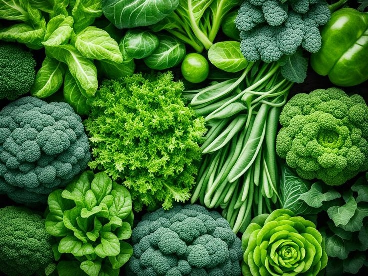
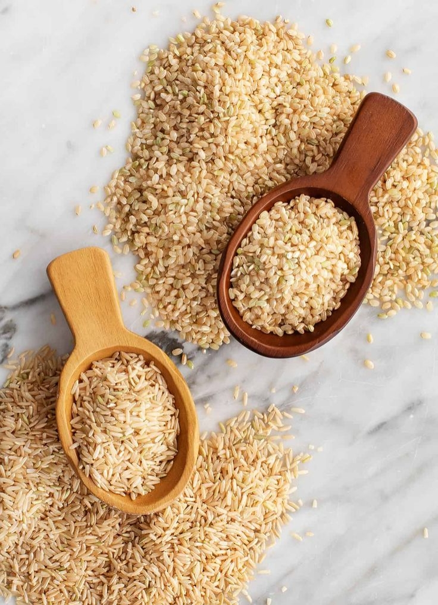

What Is Real Food?

Real food refers to natural foods that are minimally processed or not processed at all. These foods do not contain artificial additives such as preservatives, synthetic colorings, artificial sweeteners, or chemical flavorings.
Examples of real food include vegetables, fruits, whole grains, nuts and seeds, eggs, fish, and meat that are not heavily processed.
Benefits of Healthy Food

- Maintaining a strong immune system
- Supporting growth and development in teenagers
- Helping maintain a healthy body weight
- Reducing the risk of diseases such as diabetes and obesity
- Increasing energy levels and improving learning concentration
Nutritional Content of Healthy Foods
Green Vegetables (Spinach, Broccoli)

- Calories: ±23 kcal
- Protein: 2.9 g
- Carbohydrates: 3.6 g
- Fat: 0.4 g
- Fiber: 2.2 g
- Natural sugar: 0.4 g
Fruits (Apple)

- Calories: ±95 kcal
- Carbohydrates: 25 g
- Fiber: 4.4 g
- Natural sugar: 19 g
- Protein: 0.5 g
Healthy Carbohydrates (Brown Rice)

- Calories: ±123 kcal
- Carbohydrates: 25.6 g
- Protein: 2.7 g
- Fat: 1 g
- Fiber: 1.8 g
Natural Protein (Chicken Egg)

- Calories: ±70 kcal
- Protein: 6 g
- Fat: 5 g
- Carbohydrates: 0.6 g
Sugar in Healthy Foods
- Sugar comes naturally from food
- Safer than refined sugar
- Should still be consumed in moderation
Conclusion

Healthy food or real food contains balanced calories, essential vitamins, important minerals, high fiber, and natural sugars. Consuming real food regularly helps the body stay healthy, strong, and energized.
Creator Profile
Name: Rosemarie Theodora Taimenas
Role: Content Creator
Project: Healthy Food (Real Food)